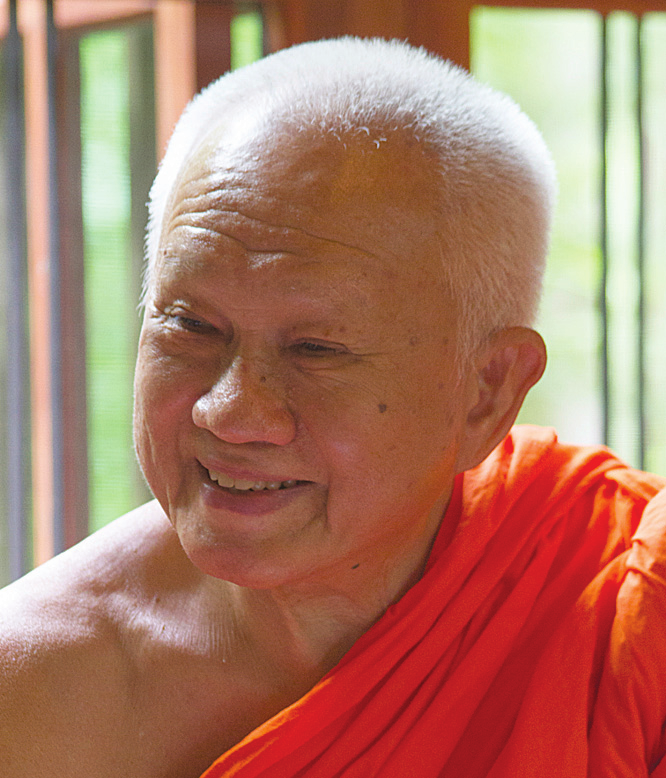

P. A. Payutto (Somdet Phra Buddhaghosacariya)

Original name: Prayudh Arayangkoon.
Born 12 January 1939 at Si Prachan District,
Suphan Buri Province, to Mr. Samran and Mrs. Chun-Ki Arayangkoon.
Life and Work
Primary Education
1945-1947: elementary education at Chai Si Pracha Rat School.
1948-1950: secondary education at Wat Prathoomkongkha Middle School (he was awarded an academic merit scholarship from the Ministry of Education).
Monastic Education
1951 (May 10): novice ordination at Wat Ban Krang, Si Prachan District, with Phra Kru Medhi-Dhammasarn as preceptor.
1952: resided at Wat Prasat Thong, capital district, Suphan Buri Province. Engaged in formal Dhamma study (pariyatti-dhamma) and practised insight meditation (vipassanā). His meditation teacher urged him to reside at the Vipassanā centre, but his father did not give his consent.
1953: went to live at Wat Phra Phiren in Bangkok.
1951-1953: passed the exams for the first, second, and third levels of Dhamma studies (nak tham).
1955-1961: passed the exams for levels 3-9 of Pali language studies (parian tham), while still a novice.
1962: obtained a Bachelor’s degree in Buddhist Studies (with first-class honours) from Mahachulalongkornrajavidyalaya University.
1963: obtained a ’Piset Mathayom’ (Special Secondary School Teacher’s Certificate).
Higher Ordination: ordained under royal patronage as a royal ordination candidate (nak luang) at the Temple of the Emerald Buddha (Wat Phra Si Ratana Satsadaram) on 24 July 1961.
Ecclesiastical titles
1969: ecclesiastical title of common rank: Phra Srivisuddhimoli
1973: ecclesiastical title of ’Rāja’ rank: Phra Rajavaramuni
1987: ecclesiastical title of ’Deva’ rank: Phra Debvedi
1993: ecclesiastical title of ’Dhamma’ rank: Phra Dhammapitaka
2004: ecclesiastical title of ’Vice Somdet’: Phra Brahmagunabhorn
2016: ecclesiastical title of ’Somdet’: Somdet Phra Buddhaghosacariya1
Religious Activities
1962-64: taught classes in the Pali Pre-university Department at Mahachulalongkornrajavidyalaya University.
1964-74: taught undergraduate Buddhist Studies at Mahachulalongkornrajavidyalaya University (during this time he would occasionally lecture at the Faculty of Archaeology at Silpakorn University and at the Program in Comparative Religion at Mahidol University).
1964-74: took up the position as Assistant Secretary-General, and later held the post as Deputy Secretary-General of Mahachulalongkornrajavidyalaya University.
1972-76: appointed the abbot of Wat Phra Phiren.
1972: lectured on ’Buddhism and Thai Culture’ at the University Museum, University of Pennsylvania.
1976: lectured on Buddhism at Swarthmore College, Pennsylvania.
1981: was invited as a Visiting Scholar at the Center for the Study of World Religions, and lectured on Buddhism at the Divinity Faculty and the Arts Faculty, Harvard University.
1994: took up the position as abbot at Wat Nyanavesakavan, Bang Krathuk, Sam Phran, Nakhon Pathom.
Honours Received
Honorary Positions
1981: Research Fellow in World Religions, Faculty of Divinity, Harvard University
1995: awarded the honorary position as Tipiṭakācariya (’Professor of the Tipiṭaka’) by Navanalanda Mahavihara, India
1995: awarded honorific title ’Savant of Culture’ by the National Council of Cultural Affairs
1996: Honorary Fellow of The Royal College of Physicians of Thailand
2001: Special Professor of Mahachulalongkornrajavidyalaya University
2004: Most Eminent Scholar by the World Buddhist University
2006: Honorary Fellow of the Royal Institute of Thailand
Decorations of Honour and Awards
1982: decoration of honour as ’Benefactor of Buddhism’ at the Bicentennial of the Rattanakosin Era
1982: first-place prize for prose literature for the literary work Buddhadhamma from the Bangkok Bank Foundation
1989: Royal Mahidol Varanusorn Award
1989: Promoter of Education Award at the Vicennial of the Faculty of Education, Kasetsart University
1990: Honorary ’Silver Conch’ Award in the field of Buddhist Propagation
1994: UNESCO Prize for Peace Education
{kind=link}
1998: TTF Award in the field of sociology and anthropology for the outstanding literary work ’Sustainable Development’ (การพัฒนาที่ยั่งยืน) by Thammasat University and Toyota Thailand Foundation
2001: Sarot Buasri Virtuous Scholar Award from Srinakharinwirot University
2007: Distinguished Alumnus Award by Mahachulalongkornrajavidyalaya University
2009: awarded the honour ’Savant of the Thai Language’ by the National Council of Cultural Affairs
2012: Sastra Methee Award (Outstanding Scholar Award) by the Professor Mom Luang Pin Malakul Foundation
2012: Promoter of Buddhism Award on the 99th birthday celebration of the Supreme Patriarch Somdet Phra Nyanasamvara
Honorary Doctorate Degrees
1982: honorary doctorate degree in Buddhist Studies from Mahachulalongkornrajavidyalaya University
1986: honorary doctorate degree in Liberal Arts (Philosophy Department) from Thammasat University
1986: honorary doctorate degree in Education (in the field of Curriculum and Instruction) from Thammasat University
1987: honorary doctorate degree in Liberal Arts (in the field of Education and Teaching) from Thammasat University
1988: honorary doctorate degree in Arts and Literature from Chulalongkorn University
1988: honorary doctorate degree in Liberal Arts (Linguistics Department) from Mahidol University
1990: honorary doctorate degree in Education (Philosophy of Education Department) from Srinakharinwirot University
1993: honorary doctorate degree in Philosophy (Education Department) from Ramkhamhaeng University
1994: honorary doctorate degree in Education from Prince of Songkla University
1995: honorary doctorate degree in Arts and Literature (in the field of Education Ethics) from Mahidol University
1998: honorary doctorate degree in Science from Chiang Mai University
2001: honorary doctorate degree in Religious Studies from Mahamakut Buddhist University
2002: honorary doctorate degree in Pedagogy from Bansomdejchaopraya Rajabhat University
2002: honorary doctorate degree in Liberal Arts (in the field of Organizational Administration) from Sripatum University
2009: honorary doctorate degree in Philosophy (department of Religion and Philosophy) from Burapha University
2009: honorary doctorate degree in Philosophy (department of Education) from Naresuan University
2009: honorary doctorate degree in Communication Arts (department of Religion and Philosophy) from Sukhothai Thammathirat Open University
2010: honorary doctorate degree in Philosophy (in the field of Human Resource Development) from the National Institute of Development Administration
2011: honorary doctorate degree in Education from Hatyai University
His magnum opus, ’Buddhadhamma’, was first published in 1971; this first edition is known as the Wan Waithayakon (or ’original’) Edition and contains 206 pages. In 1982, the author added more material; this edition is known as the Revised and Enlarged Edition and contains 1042 pages. In 2012, more material was added; this current edition is known as the Expanded Edition and contains 1330 pages.
In 2009, a group of dedicated people began the sincere and steadfast effort to create a full 23-chapter audio recording of ’Buddhadhamma’. This task was completed in 2016. This recording is now freely distributed as a 20-disc set of MP3 CDs; it is also shared through other mediums, e.g. through a website and by way of an app.
Many Dhamma CDs of the venerable author’s talks have also been made available in MP3 format. They are organized into sets, e.g.:
Arranged into topic (although designated as sets, some of the individual CDs cover a unique topic):
-
Accompanying Newly Ordained Monks in Dhamma Study (20 parts)
-
From Mental Science to Mental Development
-
Conversations with Novices Leading to Dhamma Insight
-
The Great Vogue of the ’Catugama’ Amulet Is No More
-
Every Day is Crucial; Encourage Each Other to Cultivate the Dhamma
-
By Developing Wisdom One Need Not Search for Universal Ethics
-
By Reaching This Stage One Begins to Access the Heart of Buddhism
-
Looking at Ten Stages, Seeing Ten Dimensions
-
The Buddhist Teachings Must Be Clearly Examined
-
How to Respond to Present Day National Crises
-
Practising Dhamma Correctly: Cultivating Goodness, Realizing Nibbāna
-
Ordinary Love is Truly Good, But True Love Is Better
-
Helping Each Other to Safeguard Thailand
-
Knowing the Path Leading to Genuine Happiness
-
An Abode of Truth: High Lady Poonsuk Banomyong
-
Stories for Laypeople 1-2
-
Buddhist Wisdom Training (1-8)
-
The Dhamma and Spiritual Training
-
Quelling Lord Brahma Through Homage
-
From India to Asia
-
Fledgling Democracy
-
Truth Inherent to All Stages of Life
-
Heedfulness and Happiness
-
Happiness Seen from All Angles
-
Holy Pilgrimage – Dhamma Documentary
-
Repeated Listening, Repeated Joy
-
Dhamma for Politics
-
Uncorrupted Buddhist Discipleship
-
Happiness from Fruitful Work
-
Present Day National Crises
-
Buddhism as a Foundation for Science
-
Developing Happiness
-
Guidelines for Buddhists
Arranged chronologically:
-
Teachings Related to Specific Situations – 2001
-
Timely Listening to the Dhamma – 2002
-
Assorted Teachings – 2003
-
Teachings in Relation to the World – 2004
-
Comprehending the World, Realizing the Truth – 2005
-
The Dhamma Does Not Reject the World – 2006
-
The Dhamma Is Near at Hand – 2007
-
The Progressive Nature of the Dhamma – 2008
-
Recollections Leading to Truth – 2010
Furthermore, beginning in 1987, Ven. P. A. Payutto was invited by Mahidol University to be a consultant in the creation of an International Tipiṭaka Computer Edition in Multi-scripts (BUDSIR for Windows); now complete, this is the first such computer program of its kind in the world.
N.B. Although many universities and institutions have invited the venerable author to receive honorary doctorate degrees, decorations, and awards, due to poor health and to living in remote provincial areas, since 2004 (i.e. beginning with the receipt of the distinction as Most Eminent Scholar conferred by the World Buddhist University), Ven. P. A. Payutto has asked to be excused from going in person to the respective ceremonies of honour. Instead, he has expressed his gratitude to everyone involved for their kindness and their appreciation and support for the pursuit of knowledge.
Full title: Somdet Phra Buddhaghosacariya Ñāṇa-adulyasundaranāyaka Pāvacanatilaka Varānusāsana Arayangkoon Vilāsanāmānukkama Gambhīrañāṇa-uttamavisiṭṭha Tipiṭaka-paṇḍita Mahāgaṇissara Bowonsaṅghārāma Gāmavāsī Araññavāsī. (Trans.: this is my own transliteration; the Thai version is pronounced quite differently, as the Thai language often uses the Sanskrit versions of words and frequently abbreviates Pali and Sanskrit words. Please note that transliterating the Thai ecclesiastical title พุทธโฆษาจารย์ into the Roman alphabet can be done in different ways, including: Buddhaghosacariya, Buddhaghosacharya, and Phutthakosajarn. To quote Dr. Somseen from his recent translation Dhutanga…: ’Ostensibly, the name in this particular monastic title is modeled after that of the Elder Buddhaghosa … the Indian Buddhist monk in the fifth century CE who was the greatest Theravada Buddhist commentator and scholar.’)